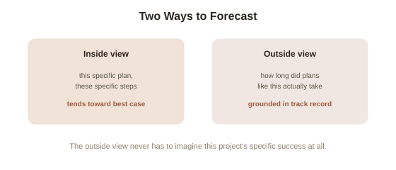

Chapter 4: The Planning Fallacy and Overconfidence
Almost every home renovation, software project, and government infrastructure plan runs over budget and over schedule — not occasionally, but as the overwhelming norm, across industries, across decades, and among people who genuinely know from experience that projects tend to run long. Sydney's opera house was budgeted at roughly $7 million and took an estimated $102 million to finish. This isn't a story about incompetence. It's one of the most consistently replicated biases in judgment research, and it happens even to people who have personally been burned by it before.
The planning fallacy: your own past doesn't update your next estimate
Kahneman and Tversky named this the planning fallacy (the tendency to underestimate the time, cost, and risk of future actions, while overestimating their benefits — even when a person has direct, relevant experience with similar tasks running long before). What makes it distinct from ordinary optimism is exactly the resistance to correction Chapter 1 flagged as a general theme: ask someone how long their current project will take, and even a person who has personally, repeatedly experienced their own past projects running over will still confidently predict this one will finish on time. The bias isn't a lack of relevant data — the data is sitting right there in personal memory. It's a specific failure to actually apply that data to the current case, because the current plan always feels different, more carefully thought through, less likely to hit the same obstacles.
Inside view versus outside view
The mechanism behind this has a clean name from Kahneman's later work: people naturally plan from the inside view — focusing on the specific details of this particular project, this team, this plan, and building a step-by-step forecast from those specifics, which tends to surface a best-case scenario because it's easy to picture things going right and hard to specifically imagine every way they could go wrong. The corrective is the outside view (also called reference class forecasting — ignoring the specific details of the current case and instead asking how long or how much similar past projects, as a class, actually took): instead of asking "how long will this specific renovation take, given our specific plan," you ask "how long do renovations like this one actually take, on average, based on many past examples" — a question that sidesteps the inside view's optimism entirely, because it never requires imagining this particular project's specific successes or failures at all.

Overconfidence: the broader pattern underneath
The planning fallacy is really a specific case of a broader, extremely well-documented pattern called overconfidence: people's stated confidence in their own judgments reliably exceeds their actual accuracy, across an enormous range of tasks. Ask people to give a range they're 90% confident contains the correct answer to a general knowledge question, and the true answer falls outside that range far more than 10% of the time — sometimes 30-40% of the time, meaning people's stated 90% confidence intervals are nowhere near as reliable as the number suggests. A related, frequently cited finding is that a large majority of drivers rate themselves as above-average — a statistical impossibility for the group as a whole, illustrating that overconfidence isn't confined to complex forecasts, it shows up even in simple self-assessment about ordinary skills.
Why overconfidence persists despite being costly
It's worth being honest that overconfidence isn't purely a bug — some research suggests a degree of unrealistic optimism carries real motivational and even signaling benefits (a founder who accurately weighted the true odds of startup failure might never start the company at all, and confident behavior itself can influence how others respond to you). But the planning fallacy specifically has no comparable upside: consistently underestimating cost and time doesn't motivate better execution, it just produces blown budgets and missed deadlines, over and over, in a pattern so reliable that construction and government contracting industries have started building formal reference-class forecasting into cost estimates specifically to counteract it — an acknowledgment that better intentions and more careful specific planning, on their own, reliably fail to fix it.
Try this
Ideas for noticing or testing this in your own life.
- Next time you estimate how long something will take, deliberately run the outside view first: before thinking about your specific plan, ask how long similar tasks have actually taken you, or people you know, in the past — then use that as your starting estimate, not an afterthought correction.
- Try a calibration check: write down ten things you're fairly confident about, each with a rough confidence percentage, and see how many actually turn out true — most people are surprised by the gap.
Worth pulling on?
A few loose threads from this chapter — if any of these genuinely grab you, that's a good sign of where to go next.
- Knowing about these biases individually hasn't been enough to fix them — but specific, structured techniques have shown real, measurable success at reducing their damage. → The subject of the final chapter in this topic: what actually works to debias real decisions.
- Overconfidence in forecasting connects directly to underdetermination and the difficulty of predicting outcomes from limited evidence, covered from a more theoretical angle elsewhere in this library. → Already in the library: Philosophy of Science covers related ground on why confident predictions from limited data are riskier than they feel.